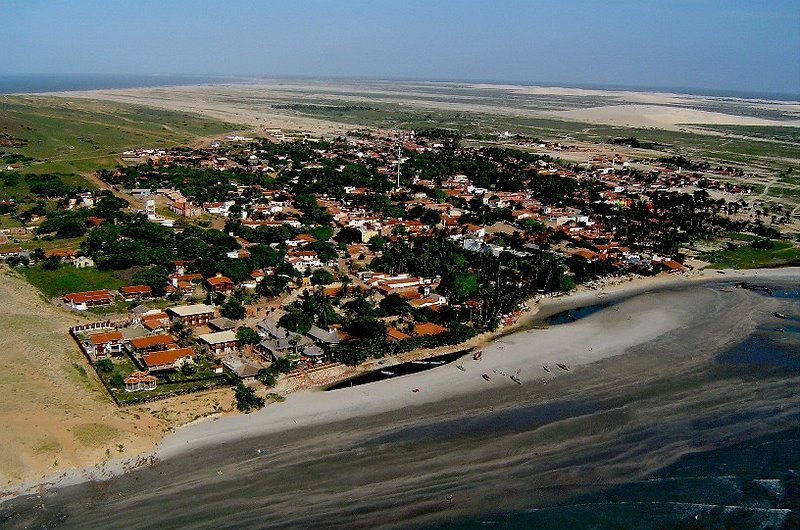
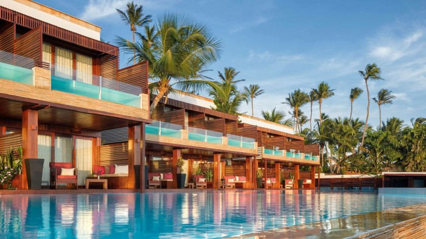
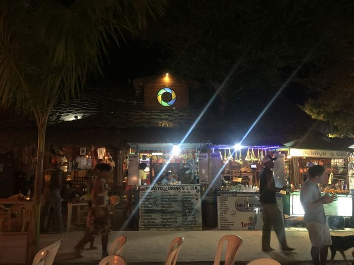
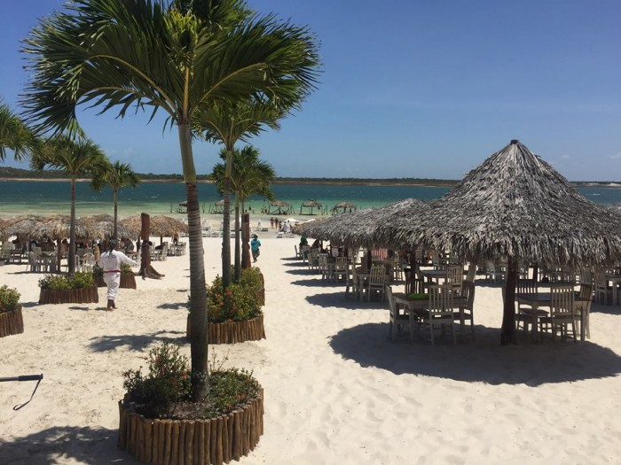

Informações técnicas sobre relevo, população, IDH etc.
| INFORMAÇÕES | |
|---|---|
| Municípios limítrofes | Oceano Atlântico; Sul: Bela Cruz; Leste: Cruz; Oeste: Camocim |
| Fundação | 6 de março de 1991 (30 anos) |
| Área total | 201,858 km² |
| Clima | Tropical |
| IDH | 0,652 — médio |
| PIB | R$ 80 391,000 mil |
| INFORMAÇÕES TERRITORIAIS | |
|---|---|
| Número de habitantes | 19 816 habitantes |
| Superfície de Jericoacoara |
20 479 hectares
204,79 km² |
| Densidade populacional | 96,8 ha./km² |
| Altitude de Jericoacoara | 22 metros de altitude |
| Coordenadas geográficas decimais |
Latitude:
-2.80045
Longitude: -40.5101 |
| Coordenadas geográficas sexagesimais | Latitude: 2° 48' 2'' Sul , Longitude: 40° 30' 36'' Oeste |
| INFORMAÇÕES DO MUNICÍPIO | |
|---|---|
| Endereço da Prefeitura Municipal de Jericoacoara |
Jericoacoara
Prefeitura de Jericoacoara
Rua Minas Gerais, 420 Jijoca de Jericoacoara - CE, 62598-000 Brasil |
| Telefone da prefeitura |
(88) 3669-1133
Internacional: +55 88 3669-1133 |
| Fax |
(88) 3669-1133
Internacional: +55 88 3669-1133 |
| Endereço electrónicoda prefeitura |
prefjijoca@ig.com.br
|
| Site oficial do município | jijocadejericoacoara.ce.gov.br |
| INFORMAÇÕES DO ADMINISTRATIVAS | ||
|---|---|---|
| Prefeito de Jericoacoara | Lindbergh Martins | |
| Partido politico | PSD | |
| INFORMAÇÕES DE TRANSPORTE | |
|---|---|
| Transporte urbano disponível | Não Disponível |
| Aeroporto |
Aeroporto Pinto Martins 39.7 km
Aeroporto de Sobral
100 km
Aeroporto Internacional Prefeito Dr.João Silva Filho
136.2 km
|
| INFORMAÇÕES DE DISTÂNCIA A OUTRAS CIDADES | ||
|---|---|---|
| São Paulo : 2402 km | Rio de Janeiro : 2257 km | Brasília : 11658 km |
| Salvador : 1153 km | Belo Horizonte : 1931 km | Manaus : 2170 km |
| Curitiba : 2688 km | Recife : 855 km | Goiânia : 1817 km |
| Belém :902 km | Porto Alegre : 3235 km | Guarulhos : 2382 km |
| Campinas : 2347 km | São Luís : 423 km mais perto | São Gonçalo : 2828 km |
| Distância calculada em linha reta! | ||
Conheça mais sobre a história da Jericoacoara.
A indicação de Jericoacoara no território e história do Ceará, vem bem antes da criação do distrito de Acaraú ou da descoberta deste pelo turismo internacional em meados da década de 1970. Este já era indicado nas cartas geográficas do século XVII
Área conhecida como parte das terra dos índios Tremembé, foi local de instalação do vilarejo e forte de Nossa Senhora do Rosário, que serviu como base de apoio aos portugueses nas batalhas contra os franceses que ocupavam o Maranhão.
Segundo conta o historiador Raimundo Girão, "Em 1614, depois de desembarcar no Iguape, município de Aquiraz, e de demorar-se no Ceará, Fortim de São Sebastião, de Soares Moreno, esteve Jerônimo de Albuquerque[13] na região de Jericoacoara, ali ergueu ao pé do serrote uma pequena fortaleza, com estacas de madeira - o Forte de Nossa Senhora do Rosário, tendo-se celebrado a 5 de Outubro do mesmo ano, festa em louvor a santa."
Continua Raimundo Girão: "No mesmo ano esse fortim fora atacado, no dia 18 de Julho pela gente de Du Prat, pirata francês, compondo a tripulação de uma nau porém é repelido heroicamente…". Esse Fortim a que se refere o historiador está localizado numa enseada, do antigo distrito de Acaraú, criado pela lei municipal nº 94, de Junho de 1923, denominado Jericoacoara.
A enseada de Jericoacoara está naturalmente protegida por uma verdadeira "cordilheira de dunas", que dificultou por muito tempo o acesso de exploradores portugueses às suas imaculadas terras. Assim sendo, temos apenas notícias de visitas esporádicas realizadas por aventureiros, que vindos por mar com destino ao Maranhão ai estiveram a partir do século XVII e dos nativos.
No dia 16 de novembro de 1952 foi inaugurado o "Farol de Jericoacoara", localizado a 120 metros do nível do mar, no topo de um dos serrotes que delineiam a enseada, cuja construção foi dirigida pelo Capitão Jorge Leite da Silva.
Em 1984, o governo brasileiro, por ato de seu presidente, o General João Figueiredo, determinou área de Jericoacoara com sendo de Área de Proteção Ambiental. Em 1991, por força da lei nº 11.796, Jijoca, distrito de Cruz, tornou-se município autônomo, anexado ao seu território a praia de Jericoacoara e passando a denominar-se Jijoca de Jericoacoara.
Em 1998, a energia elétrica passou a ser provida por uma rede subterrânea, substituindo os geradores que iluminavam apenas alguns pontos da aldeia de Jericoacoara.
Saiba mais sobre os melhores lugares e o que fazer em Jericoacoara.
Vista Jericoacoara | Jericoacoara-CE
Jericoacoara, chamada simplesmente de Jeri pelos mais íntimos, é o lugar perfeito para momentos de lazer e recarregar as energias. Lá, a vibração é outra e a percepção do tempo também. Céu, sol, mar, praias, dunas e lagoas de água doce compõem um cenário de belas paisagens naturais que se integram em perfeita sintonia, fazendo de Jeri um lugar mágico.
QUANDO IR?
Em Jeri é calor o ano inteiro! Portanto, se você busca sossego ao sol, pode ir qualquer época do ano. (Como disse acima, está quase na linha do Equador!)
O verão vai de julho à dezembro, quando chove menos. (Eu fui em novembro/15 e o Plínio foi em dezembro/15. Em breve o Plínio, que tá morando em Fortaleza, irá fazer uma segunda visita no início do ano e volta aqui pra contar pra gente). Essa é a melhor época para a prática de esportes como Wind e Kite Surf por conta da intensidade dos ventos. Além disso, quem vai em julho, pode curtir o espetáculo do por do sol dentro da Pedra Furada.
Sugiro evitar o período de férias de julho e Ano Novo, pois a vila fica muito cheia e os preços são bem altos. O ideal mesmo é ir de setembro a novembro, quando Jeri tem um ótimo astral, com turistas das mais diversas nacionalidades. O inverno vai de janeiro a junho, sendo que maio e junho são os meses mais chuvosos.
ONDE FICAR E ONDE COMER?
Com uma boa infraestrutura hoteleira, que vai de pousadas simples a hotéis de luxo. Todos esses pontos recebem bem a todos, com uma diversidade incrível. 
Sem postes de iluminação artificial para não ofuscar a luz natural da lua e das estrelas, turistas e locais circulam pelas ruas de areia, descalços, numa boa. Além de boa diversidade de hotéis, Jeri oferece também bons restaurantes para todos os gostos e bolsos. Há até comidinhas de rua saborosas a preços acessíveis. 
PASSEIOS
Considerada uma das 10 praias mais bonitas do mundo, de acordo com o Jornal Washington Post, não por acaso. Há quem diga que o nome tem origem indígena “Jacaré que toma sol “ (verbo quarar = tomar sol) Para fazer os principais passeios e aproveitar bem as praias e a vila de Jericoacoara, recomenda-se normalmente pelo menos 3 dias inteiros na vila. 
Veja como chegar nos melhores pontos de Jericoacoara